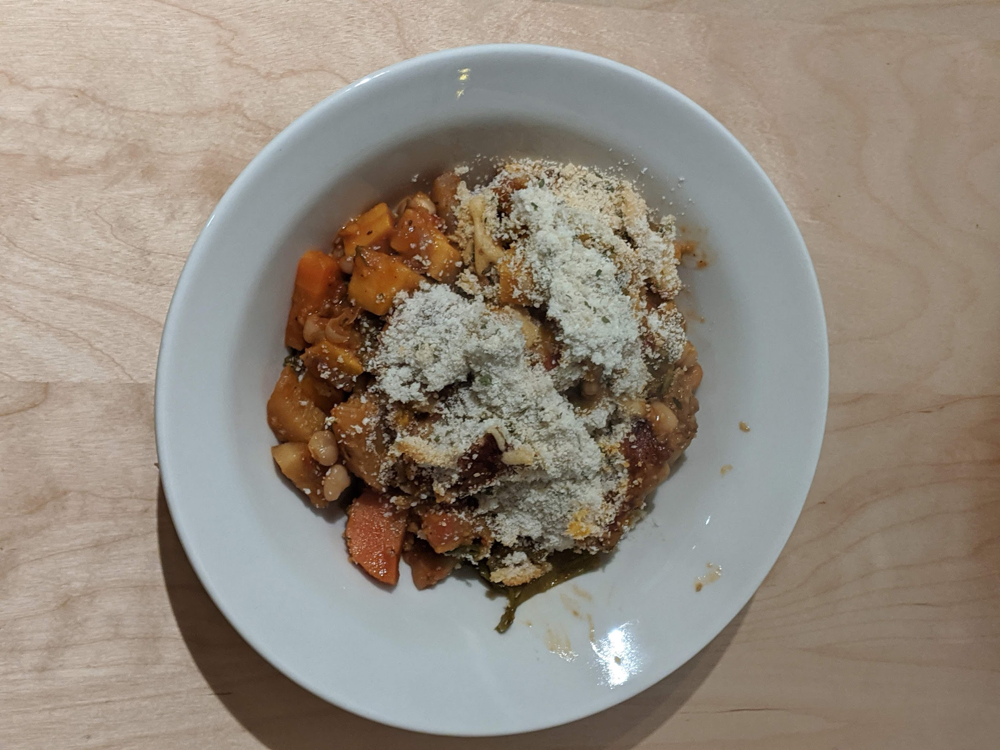

Cassoulet végétarien

Pour 4 gros mangeurs :
- Un oignon
- Trois gousses d'ail
- Une cuillère à café de clous de girofle moulus ou pilés
- Une feuille de laurier
- Une branche de thym
- Deux carottes
- Deux branches de céleri
- 450g de potiron
- 450g de panais
- 250ml de vin blanc
- 4 tomates concassées, ou 400g de tomates en conserve
- 400g de haricots blancs en conserve
- Un litre de bouillon de légumes
- 150g de chapelure (légèrement grillée, si possible)
- 50g d'emmental râpé
- Une cuillère à soupe de persil
- Sel, poivre, huile d'olive
- Préparer les légumes : éplucher et hacher finement l'oignon, éplucher et couper les carottes en petits morceaux, laver et hacher le céleri, éplucher et couper le potiron en petits morceaux, éplucher et couper le panais en rondelles, rincer et égoutter les haricots.
- Dans une grande cocotte qui va a four, faire suer l'oignon jusqu'à ce qu'il devienne transparent, ajouter les épices (sauf le persil), les carottes et le céleri, et faire cuire une petite dizaine de minutes à feu très doux.
- Préchauffer le four à 180°C. Ajouter le potiron et les panais dans la cocotte, les faire revenir quelques minutes, puis verser le vin. Augmenter la température, remuer et laisser bouillir une ou deux minutes.
- Ajouter tomates, haricots et bouillon, porter à ébullition, baisser le feu quelques instants pour que le plat mijote, assaisonner, couvrir et mettre au four pendant 40 minutes.
- Mélanger la chapelure, l'emmental et le persil, la répartir sur le cassoulet et laisser cuire une demi-heure supplémentaire au four. Au bout d'une demi-heure, ôter le couvercle pour que le dessus du plat dore pendant une dizaine de minutes.
- Servir chaud dans des gros bols, avec du pain bien croustillant.
Remarque : Si le végétarisme, c'est pas trop ton truc, tu peux servir ça avec une saucisse de Toulouse poêlée par personne (que tu peux même, après les avoir fait poêlées, les laisser prendre le goût du jus de cuisson dans la cocotte).
Retour à la liste des recettes